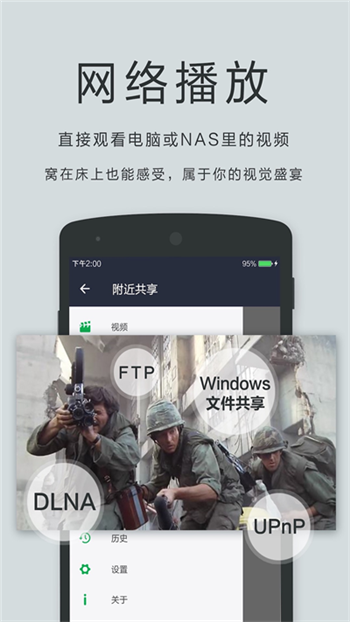

一条线搞定多媒体消费：我是怎么用OPlayer串起PC、手机和电视的
以前从网上下一部电影，要格式转换、USB拷贝、再想办法投屏到电视，一个流程耗半小时。换成OPlayer之后这条链能缩到打开App直接找文件，怎么做到的？
旧流程的痛点：每一步都卡壳
我每周的固定动作是从PC下一部电影，然后想办法在电视上看。以前这套流程是这样的：
第一步，用qBittorrent或浏览器在PC上下好资源——这步其实还好，速度取决于带宽。
第二步，格式转换。很多下载下来的MKV或者RMVB，手机自带播放器要么放不出来要么没声音。于是装了个格式工厂，转MP4 H.264，4GB的文件转一圈要二十多分钟。有时候转完字幕没了，还得单独下载SRT文件。
第三步，传到手机。要么插USB数据线，要么用微信文件传输助手。USB线插了经常识别不了，微信传大文件又限速到几百KB每秒，一个4GB的视频要传半小时。
第四步，投屏到电视。这步最玄学。有时候YouTube能搜到Chromecast但OPlayer搜不到；有时候关了VPN也不行；有时候路由器重启了就好，下次又不行。我专门写了个排查清单，从WiFi是不是同网段开始，到关客户端隔离，到拔插Chromecast电源，到换HDMI口……全套走完平均十五分钟。
五段式流程，总耗时加起来快一小时。其中真正花在"看"上面的时间为零——全都在准备。
新流程：OPlayer插进去的那一环
现在我把OPlayer当成整条链的中枢。整条链路是这样的：
PC下载 → NAS存储 → OPlayer通过SAMBA流媒体直播 → Chromecast投屏到电视
五个环节砍到了四个，而且砍掉的都是手动操作。具体每个环节怎么接：
PC → NAS：我家里有个旧笔记本刷了OpenWrt当NAS用，开了SMB共享。PC下载完直接存到NAS的共享目录，这一步qBittorrent自带完成后移动功能，全自动不需要人干预。
NAS → OPlayer：这步是关键。打开从官方下载安装好的OPlayer，在主界面点"更多" → "添加网络" → 选SAMBA，填NAS的IP地址、用户名密码，就完成了。之后OPlayer的主界面会多出一个网络磁盘图标，点进去直接浏览NAS上的所有视频文件夹。
重点是不需要下载到手机本地。OPlayer的流媒体播放能力是真的好用——边下边解，拖动进度条基本零延迟。它的官网上对这个核心优势有完整介绍，也让我省了以前格式转换、USB传输、微信传文件那三步的所有时间。
OPlayer → 电视：OPlayer内置了Chromecast/AirPlay/DLNA三种投屏协议。播放界面右上角一个电视机图标，点一下自动搜索同网段的投屏设备。
这里要提一下，OPlayer的投屏比其他播放器稳定。我以前用MX Player投屏经常丢连接，OPlayer基本上是连上就不丢。
手机后台 → 锁屏继续：如果不在电视上看，我会用OPlayer后台播放。锁屏后系统通知栏会自动显示OPlayer的媒体控件，能直接播放/暂停/快进快退。这个功能对通勤路上特别实用——不用解锁就能切下一集。

实操里最容易断链的两个点
整条链跑下来半年了，总结出两个最容易出问题的地方，提前处理好能省很多时间。
投屏搜不到设备：30秒快速排查
90%的投屏失败根因就是"手机和电视不在同一个WiFi"——别小看这个，我有次手机连了2.4GHz，电视连了5GHz，路由器开了客户端隔离，搜了十分钟才发现问题。
OPlayer搜不到设备时，我现在有一套固定的30秒排查顺序：
- 先确认手机和电视连的WiFi SSID完全一样（大小写也要对），不要一个连访客网络一个连主网络
- 手机上开了VPN吗？开了就关掉——VPN会拦截局域网广播包，Chromecast/AirPlay靠这个发现设备
- 试试YouTube能不能搜到同一个投屏设备——能搜到就说明不是网络问题，OPlayer可能版本旧了，更一下；搜不到就继续
- 拔一下Chromecast或电视电源，等30秒插上
这套走完95%的情况能解决。剩下的5%大概率是路由器UPnP服务挂了，重启路由器就好。
流媒体拖动缓冲：带宽不够时的应对
OPlayer的流媒体拖动正常情况响应很快，但遇到以下几种情况会卡：
- 公共WiFi或酒店网络，带宽不稳定
- 跨网段访问（比如手机在公司WiFi，NAS在家里路由器后面）
- 蓝光原盘文件（40GB+），对带宽要求很高
解决办法分三档：轻量级的等它自动缓冲几秒就行；中量级的把OPlayer的缓冲区调大（OPlayer文档里有详细的参数说明，设置 → 网络播放 → 缓冲时长，默认10秒可以调到30秒）；重量级的还是老办法——用OPlayer的WiFi传输功能把文件拉到手机本地再看。
OPlayer的WiFi传输速度挺快的，PC端打开浏览器输入手机IP加端口号，拖文件到网页上就行，一个4GB文件大概五六分钟。

效果算账：省了多少事
量化一下这套流程相比以前省了什么：
- 砍掉了2~3次手动格式转换（平均每次20分钟）
- 砍掉了USB拷贝或微信传文件（大文件每次15~30分钟）
- 砍掉了投屏排查时间（以前每次平均10~15分钟，现在90%情况点一下就好）
- 砍掉了字幕单独下载（OPlayer能自动加载同目录下的SRT文件）
单集电影以前耗时45~60分钟的准备，现在5分钟以内搞定。
这套流程什么时候不划算
不是所有场景都适合这条链，以下几种情况我会手动干预：
出差或旅行：飞机上、高铁上没WiFi，流媒体播不了。这种情况我会提前用OPlayer的WiFi传输把要看的视频拉到手机本地。
网络特别差的环境：比如酒店公共WiFi带宽不够，拖动进度条要等5~10秒，体验很差。这时宁可花几分钟下载到本地再看。
蓝光原盘收藏：40GB+的蓝光文件，即使在家庭5GHz WiFi下拖动也会有2~3秒延迟，而且码率波动可能影响画质。这种情况我会先下载到本地存储，用OPlayer的硬解码功能播放——OPlayer支持H.265 10-bit硬解，比软解码流畅得多，也不发热。
另外要注意的是，某些老旧格式OPlayer也放不出来——RealVideo RV50/RV60编码的文件、带DRM的保护视频（比如iTunes买的），这些情况还是得先转格式，但这种文件越来越少了，频率可以忽略。
结尾
这套工作流跑下来，最大的感受是把"消费"这件事里的"准备成本"降到了接近零。以前我甚至因为嫌麻烦会放弃一些想看的电影——等格式转完传完，兴致没了。现在拿起手机打开OPlayer，直接找到NAS上的文件点开就看，投屏也是一键。
当然，这套链路的稳定性依赖家庭网络环境——NAS、路由器、Chromecast都是单点，任何一个挂了整条链就停。但半年下来除了偶尔路由器需要重启一次，基本没出过问题。
以上用到的 OPlayer 安装包、NAS 设置方法、投屏排查详细步骤，都可以在我整理的资料里找到——GitHub、Gitee、GitCode 三处同步维护，国内访问选 Gitee 或 GitCode 更稳。